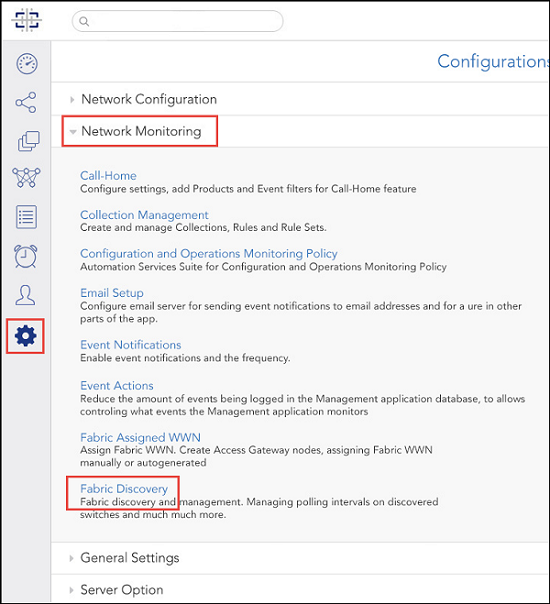
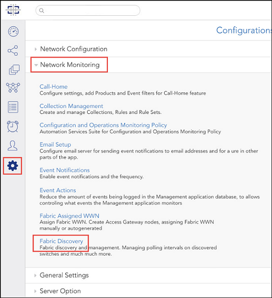
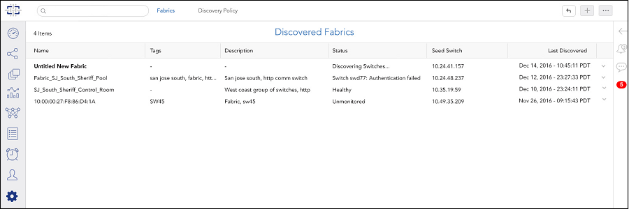

Discovering a Fabric
You must discover a fabric before you can monitor and manage it.
Before you can discover a fabric, you must have the following:
- SAN-Discover Setup privilege with read/write permission
- IP address and login credentials for the seed switch
Use the following procedure to discover a fabric.
-
Click the
Settings icon (
 ), and then select
.
The Discovered Fabrics page displays all fabrics that have been discovered.Figure 5 Accessing the Discovered Fabrics page
), and then select
.
The Discovered Fabrics page displays all fabrics that have been discovered.Figure 5 Accessing the Discovered Fabrics page -
Click the
Add Fabric (
 ) button in the top right corner of the page.
Figure 6
) button in the top right corner of the page.
Figure 6
-
Enter the IP address, username, and password of the seed switch in the
Add Fabric dialog box.
The IP address can be in IPv4 or IPv6 format.Figure 7 Add Fabric dialog box

-
Click
OK.
If the seed switch is enabled with Virtual Fabrics and has more than one logical switch, you must select which logical fabrics to discover.
The Add Fabric dialog box displays a list of the logical switches configured on the seed switch. Each logical switch corresponds to a logical fabric, indicated by the fabric ID (FID). The Name is the logical switch name, not the logical fabric name.
The dialog box displays only the logical switches that have not yet been discovered.
Figure 9 Add Fabric dialog box with undiscovered logical fabrics
- Select one or more logical fabrics to discover.
- Click OK.
The
Discovered Fabrics page displays with the newly discovered fabrics listed.
Figure 10
Discovered Fabrics page

Click the fabric name to open the drill-down page, where you can change the fabric name and view a list of switches in the fabric.